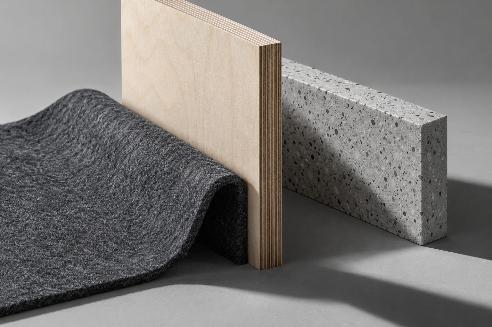

A—01 / PLY
层积木
240 × 160 × 12mm
长 × 宽 × 厚 / 示例设计参数
- 组成
- 表面
- 工艺
- 适用

MATERIAL STUDIES / 01
边缘，让材料说出自己的结构。
从一层木、一束纤维、一片颗粒开始，
观察构造如何成为触感。
摄影保留材料的表面与接触关系；几何回到共同单位。两种观察各司其职，不用照片的像素大小推断尺寸与优劣。
A—01 / PLY
240 × 160 × 12mm
长 × 宽 × 厚 / 示例设计参数
下图是共享投影与尺度的几何表达。
表面质感看上方陈列，尺寸与条件在这里核对。
先选择材料并加入同尺度对照。最多保留两份，逐项比较相同维度；不制造没有依据的排名。
三种表面是原创概念材质视觉；数值来自独立的固定设计参数。真实选型还需要材料来源、试样、规格与使用条件，这里不产生采购、库存、施工或性能判断。